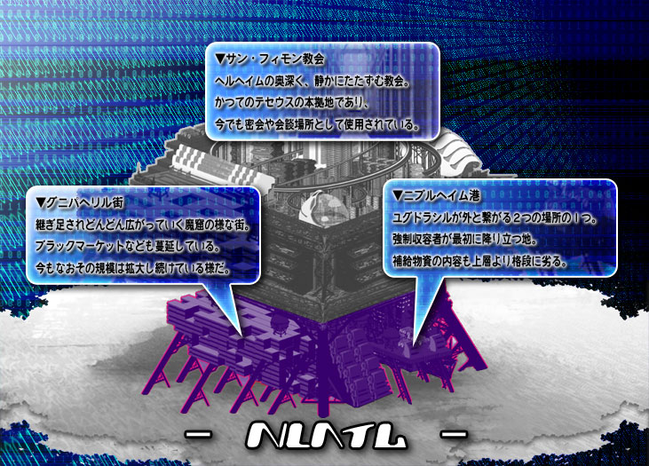

▼下層【 ヘルヘイム 】
下層【 ヘルヘイム 】
抑制機構テセウス
闇商会スヴァルトアルフ
サン・フィモン教会
武装親衛隊【 ヘル 】
情報室【 ヨルムンガンド 】

抑制機構テセウスの管轄層。もっとも治安が悪く、犯罪者も多く徘徊するエリア。
その一報でブラックマーケットなどで賑わいを見せる側面も持つ。
テセウスが中心となってマフィア社会を牛耳っており、上層・中層とは又違った独特な社会を形成している。
様々な文化が入り混じり、３層の中では構造がもっとも複雑である。
中層と違い天井には人工太陽光のライトもなく、建物それぞれの照明が薄暗く下層を照らす。
暗く湿ったこの世界は、住民の心を荒ませるに十分な環境と言える。
この層を治めるテセウスの武装親衛隊ヘル、特殊部隊フェンリル、情報室ヨルムンガンドといった
裏世界で鍛えられた彼らの実力は高い。
又、ニブルヘイム港が外界から強制収容された人々が最初に行き着く場所でもある。
そこではテセウス主導の下、簡易的に市民登録が行われる。
犯罪暦があるものは主に下層に、
軽犯罪程度、もしくは能力者というだけで強制収用されたものは中層民として登録振り分けが行われる。
その一報でブラックマーケットなどで賑わいを見せる側面も持つ。
テセウスが中心となってマフィア社会を牛耳っており、上層・中層とは又違った独特な社会を形成している。
様々な文化が入り混じり、３層の中では構造がもっとも複雑である。
中層と違い天井には人工太陽光のライトもなく、建物それぞれの照明が薄暗く下層を照らす。
暗く湿ったこの世界は、住民の心を荒ませるに十分な環境と言える。
この層を治めるテセウスの武装親衛隊ヘル、特殊部隊フェンリル、情報室ヨルムンガンドといった
裏世界で鍛えられた彼らの実力は高い。
又、ニブルヘイム港が外界から強制収容された人々が最初に行き着く場所でもある。
そこではテセウス主導の下、簡易的に市民登録が行われる。
犯罪暦があるものは主に下層に、
軽犯罪程度、もしくは能力者というだけで強制収用されたものは中層民として登録振り分けが行われる。
【関連組織】 テセウス、スヴァルトアルフ
下層の管理組織。暴力に対して、より強い暴力により下層を統べる。
詳細はレギュラー勢力【 テセウス 】を参照。
詳細はレギュラー勢力【 テセウス 】を参照。
【関連NPC】 ジョン＝ドゥ
レギュラー勢力【 テセウス
】を参照。
下層のエネミー勢力。下層の多くの裏稼業に関わる。
ある種、下層の経済事情に多く関わっているため、余計に厄介な存在。
詳細はエネミー勢力【 スヴァルトアルフ 】を参照。
ある種、下層の経済事情に多く関わっているため、余計に厄介な存在。
詳細はエネミー勢力【 スヴァルトアルフ 】を参照。
【関連NPC】 マリア＝テレジア
エネミー勢力【 スヴァルトアルフ
】を参照。
ヘルヘイムの奥深く、静かに佇む教会。
教会地下はテセウスの本拠地となっており、情報室ヨルムンガンド、武装親衛隊ヘルの拠点ともなっている。
革命組織時代から密会や会談場所に利用されており、教会ながら威圧感ある雰囲気を放つ。
教会地下はテセウスの本拠地となっており、情報室ヨルムンガンド、武装親衛隊ヘルの拠点ともなっている。
革命組織時代から密会や会談場所に利用されており、教会ながら威圧感ある雰囲気を放つ。
又、非公式だが特殊部隊フェンリルもここを拠点としている。
【関連組織】 テセウス、ヘル、ヨルムンガンド、フェンリル
下層における犯罪鎮圧部隊。治安維持というよりは暴力装置としての役割での抑制力としての働きが強い。
レギューラー勢力【 ヘル 】の項を参照。
レギューラー勢力【 ヘル 】の項を参照。
【関連組織】 テセウス
【関連NPC】 マチルダ
レギューラー勢力【 ヘル
】の項を参照。
下層の情報を統べる組織。ハッキング技術に特化しており、裏の情報に最も精通している。
レギューラー勢力【 ヨルムンガンド 】の項を参照。
レギューラー勢力【 ヨルムンガンド 】の項を参照。
【関連組織】 テセウス
【関連NPC】 セラフィーマ
レギューラー勢力【 ヨルムンガンド 】の項を参照。
非公式の「存在しないはずの部隊」。暗殺などを行うテセウスの暗部。
レギューラー勢力【 フェンリル】の項を参照。
レギューラー勢力【 フェンリル】の項を参照。
【関連組織】 テセウス
【関連NPC】 ガラ
レギューラー勢力【 フェンリル】の項を参照。
外界とユグドラシルを繋ぐ数少ない窓口。
強制収容者の受け口であり、ほとんどの外界収容者がまず訪れる場所。
収容時には暴れる者などがいるため、
見せしめもかねてテセウスによる違反者の処刑が毎度行われる。
もちろん暴れたりするような者がいなければ行われないのだが…。
上層のビフレスト空港には質は劣るが、ここにも輸入品が流れてくる。貿易の要。
下層でもっとも管理が厳しく、最先端の技術が取り入れられている場所でもある。
テセウスが管轄している港ではあるが、
漁業組合【 エーリヴァーガル 】が現場指揮・管理を行っている。
強制収容者の受け口であり、ほとんどの外界収容者がまず訪れる場所。
収容時には暴れる者などがいるため、
見せしめもかねてテセウスによる違反者の処刑が毎度行われる。
もちろん暴れたりするような者がいなければ行われないのだが…。
上層のビフレスト空港には質は劣るが、ここにも輸入品が流れてくる。貿易の要。
下層でもっとも管理が厳しく、最先端の技術が取り入れられている場所でもある。
テセウスが管轄している港ではあるが、
漁業組合【 エーリヴァーガル 】が現場指揮・管理を行っている。
【関連組織】 テセウス、エーリヴァーガル
ニブルヘルム港にて収容された者は犯罪者は下層に、
軽犯罪程度や犯罪歴のない者は中層に市民登録され、それぞれの層に振り分けられる。
なお、能力は捕まった時点で収容者データとして登録済だが、
能力の全貌を明かさずに隠し玉を持っている者も少なくない。
軽犯罪程度や犯罪歴のない者は中層に市民登録され、それぞれの層に振り分けられる。
なお、能力は捕まった時点で収容者データとして登録済だが、
能力の全貌を明かさずに隠し玉を持っている者も少なくない。
その登録作業を行うのはテセウスであるが、
市民登録後、スヴァルトアルフ主催によって一部の権力者などが
収容者の登録権・所有権を売買する【 登録売買 】が半ば公然的に行われる。
実力のありそうな能力者を上層に市民権を移らせ子飼いとしたり、
中層者を下層登録として奴隷化したりなど目的は多岐に渡るが、権力者の娯楽の１つである事は言うまでもない。
市民登録後、スヴァルトアルフ主催によって一部の権力者などが
収容者の登録権・所有権を売買する【 登録売買 】が半ば公然的に行われる。
実力のありそうな能力者を上層に市民権を移らせ子飼いとしたり、
中層者を下層登録として奴隷化したりなど目的は多岐に渡るが、権力者の娯楽の１つである事は言うまでもない。
ルーン企業連も裏で関わっており、この【 登録売買
】という行為は黙認されている形である。
【関連組織】 スヴァルトアルフ、ルーン企業連
ユグドラシルにおける海に出る行為は、上層民以上の特権である。
もっとも厳しく管理されている職業であり、
船上からの脱出や逃亡を企てられないように厳正に船員は選別される。
中には強制収用時の輸送船に特別に護衛員として選ばれることがあり、それが最高の誉れとされている。
ユグドラシルにおける数少ないクローンではない天然食材である魚介類を得るこの職業は、
最も高潔で神聖視すらされる職業なのである。
船員たちも荒くれ者というよりは、歴戦の軍人のような者が多い。
管轄権限はあくまでテセウスだが、ニブルヘイム港においては彼らと対等以上の権限があると言える。
もっとも厳しく管理されている職業であり、
船上からの脱出や逃亡を企てられないように厳正に船員は選別される。
中には強制収用時の輸送船に特別に護衛員として選ばれることがあり、それが最高の誉れとされている。
ユグドラシルにおける数少ないクローンではない天然食材である魚介類を得るこの職業は、
最も高潔で神聖視すらされる職業なのである。
船員たちも荒くれ者というよりは、歴戦の軍人のような者が多い。
管轄権限はあくまでテセウスだが、ニブルヘイム港においては彼らと対等以上の権限があると言える。
【関連組織】 テセウス
【関連NPC】 ガバル＝ガルガンティア
54歳 男性 能力タイプ/エスパー 能力名/絶対感知
54歳 男性 能力タイプ/エスパー 能力名/絶対感知
傷だらけの巨躯に軍服が特徴の柔軟性も併せ持つ歴戦の猛者。
右が義眼となっており、眼帯がチャームポイント。
ソナーのような感知能力【 絶対感知 】を持つ。
彼の感知能力はレーダーを凌ぎ、時には予知さながらの勘を働かせることも。
かつてジョン＝ドゥに戦闘技術を教授した男でもあり、ジョンとは友であり、師匠でもある。
義侠心に厚く、下層において彼以上に高潔な人物もそうはいない。
それ故にニブルヘイム港やエーリヴァーガル上での取引は
スヴァルトアルフも手は出せず、全うな取引が行われている。
右が義眼となっており、眼帯がチャームポイント。
ソナーのような感知能力【 絶対感知 】を持つ。
彼の感知能力はレーダーを凌ぎ、時には予知さながらの勘を働かせることも。
かつてジョン＝ドゥに戦闘技術を教授した男でもあり、ジョンとは友であり、師匠でもある。
義侠心に厚く、下層において彼以上に高潔な人物もそうはいない。
それ故にニブルヘイム港やエーリヴァーガル上での取引は
スヴァルトアルフも手は出せず、全うな取引が行われている。
「船上では命は海が握っている。驕る者は俺が殺してやるから前に出ろ。」
「クハハハハ！悪いが俺は悪巧みは苦手でな。
俺に取引を持ちかけるなら上質な酒と全うな取引を持って来い。」
「クハハハハ！悪いが俺は悪巧みは苦手でな。
俺に取引を持ちかけるなら上質な酒と全うな取引を持って来い。」
性能：基礎５ｐステータス＋ボス特性１０ｐ
ユグドラシルの枠外にまで飛び出てまで継ぎ足され、
今なお広がりを見せる魔窟のようなマーケット街。
ブラックマーケットなども多く蔓延しており、スヴァルトアルフの息が大きくかかっている。
下層の４分の１はこのグニパヘリル街でできており、
その密集具合はユグドラシルでもっとも複雑なエリアでもある。
今なお広がりを見せる魔窟のようなマーケット街。
ブラックマーケットなども多く蔓延しており、スヴァルトアルフの息が大きくかかっている。
下層の４分の１はこのグニパヘリル街でできており、
その密集具合はユグドラシルでもっとも複雑なエリアでもある。
【関連組織】 スヴァルトアルフ
スヴァルトアルフが運営するアンダーグラウンド事業の１つ。
電脳世界では味わえないリアルのスリル。
その魅力はアンダーグラウンドにおいても高いものである。
実際に行われるリアルファイト。敗者には死を。勝者には富を。
しかし富を得たとしても勝者には安寧はないだろう。
賭博場としても日夜大きな金額が動いている。
電脳世界では味わえないリアルのスリル。
その魅力はアンダーグラウンドにおいても高いものである。
実際に行われるリアルファイト。敗者には死を。勝者には富を。
しかし富を得たとしても勝者には安寧はないだろう。
賭博場としても日夜大きな金額が動いている。
ファイターのエントリーは強制的に行われる者もいれば、自ら志願して参戦する者など、様々である。
【関連組織】 スヴァルトアルフ
【関連NPC】 クラウン＝クラウン
エネミー勢力【 スヴァルトアルフ
】を参照。
スヴァルトアルフが抱えるクローン兵たち。非常に短命であり、長くても２０代程度で生涯を終える。
培養自体は数ヶ月～１年程度という規格外の早さで完了し、出荷されている。
精神・知識面は運用ができる程度の人工知能を事前に埋め込むことで
クローン兵としての体裁を維持しており、そのためか感情は希薄なことが多い。
培養させる期間・身体年齢・埋め込む人工知能レベルで値段が変わるため、
幼児体での受注･出荷量が最も多く、それ故の問題も多く発生している。
元はルーン企業連から技術提供を受けたものだが、独自技術に昇華したもの。
このクローン技術はスヴァルトアルフが最高峰といえるほどであり、ルーン企業連にも提供せずに独自で秘匿としている。
早期運用をもっとも重要視されたため、移植臓器などの医療技術方面には適さない。
培養自体は数ヶ月～１年程度という規格外の早さで完了し、出荷されている。
精神・知識面は運用ができる程度の人工知能を事前に埋め込むことで
クローン兵としての体裁を維持しており、そのためか感情は希薄なことが多い。
培養させる期間・身体年齢・埋め込む人工知能レベルで値段が変わるため、
幼児体での受注･出荷量が最も多く、それ故の問題も多く発生している。
元はルーン企業連から技術提供を受けたものだが、独自技術に昇華したもの。
このクローン技術はスヴァルトアルフが最高峰といえるほどであり、ルーン企業連にも提供せずに独自で秘匿としている。
早期運用をもっとも重要視されたため、移植臓器などの医療技術方面には適さない。
染色体の変化をあまり起こさない状態で成熟させるため、男性固体は少ない。
通常は固体番号で呼ばれるグリゴリシリーズだが、能力に目覚めた固体には市民権と名前が与えられる
通常は固体番号で呼ばれるグリゴリシリーズだが、能力に目覚めた固体には市民権と名前が与えられる
【関連組織】 スヴァルトアルフ
【関連NPC】 レミエム
エネミー勢力【 スヴァルトアルフ
】を参照。
下層のＹＤＦは多くが腐敗しており、
闇商会【スヴァルトアルフ】の息がかかっている事がほとんどである。
ＹＤＦとしての仕事をしていないわけではないが、スヴァルトアルフ関連の違法ビジネスを黙認している事は多い。
闇商会【スヴァルトアルフ】の息がかかっている事がほとんどである。
ＹＤＦとしての仕事をしていないわけではないが、スヴァルトアルフ関連の違法ビジネスを黙認している事は多い。
その権力にただ一つ屈しないＹＤＦが１３番隊である。
その実は荒くれ者の集団であり、スヴァルトアルフの悪行よりもひどいと言える暴力でその毒を制している。
気に食わないものはその力で鎮圧する、それだけの横暴さを持つ問題児の集団
その実は荒くれ者の集団であり、スヴァルトアルフの悪行よりもひどいと言える暴力でその毒を制している。
気に食わないものはその力で鎮圧する、それだけの横暴さを持つ問題児の集団
結果、スヴァルトアルフの抑圧になっている事から
テセウスも13番隊の様々な行き過ぎともいえる鎮圧行動を黙認している。
しかし同様にテセウス自身も１３番隊に手を焼いてはいるのだが…。
テセウスも13番隊の様々な行き過ぎともいえる鎮圧行動を黙認している。
しかし同様にテセウス自身も１３番隊に手を焼いてはいるのだが…。
【関連NPC】 フェリコ＝ククルシル
２５歳 女性 能力タイプ/ノーマル
２５歳 女性 能力タイプ/ノーマル
女性ながら絶対の体力と格闘能力で下層の荒くれ者どもを相手にする猛者。
赤髪のショートヘアに金色の瞳。切れ長の眼は非常に鋭く、見るものを戦慄させる。
通称【 狂犬 】の蔑称で呼ばれる質実剛健のバトルマニア。拳のトリガーハッピー。
先の事は考えず、悪だと判断した者はその拳で叩き潰すといったシンプルな思考を持った女性。
とりあえず先に手が出る。足が出る。
赤髪のショートヘアに金色の瞳。切れ長の眼は非常に鋭く、見るものを戦慄させる。
通称【 狂犬 】の蔑称で呼ばれる質実剛健のバトルマニア。拳のトリガーハッピー。
先の事は考えず、悪だと判断した者はその拳で叩き潰すといったシンプルな思考を持った女性。
とりあえず先に手が出る。足が出る。
かつては中層勤務だったが、多くの始末書を抱え、下層の１３番隊に勤務となった。
本人曰く、「ここでの仕事はアタシの天職だね」との事。正義心がないわけではない。
中央隊のアキラとエデン隊のエルマーとは同期。トランプ隊のサンは後輩にあたる。
本人曰く、「ここでの仕事はアタシの天職だね」との事。正義心がないわけではない。
中央隊のアキラとエデン隊のエルマーとは同期。トランプ隊のサンは後輩にあたる。
「オラオラオラ！１３番隊がお前らに屈すると思ったら大間違いだぁ！！」
「アハハハ、とりあえず死ね☆」
「アハハハ、とりあえず死ね☆」
性能：基礎４ｐステータス＋ボス特性５ｐ